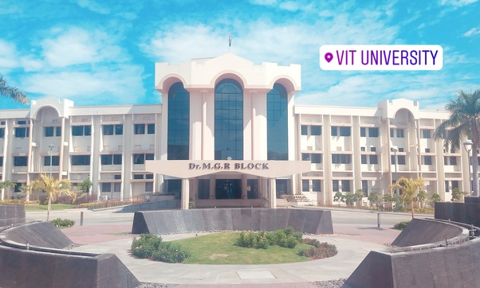
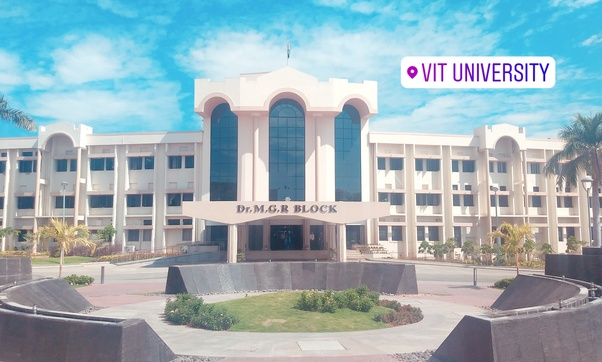

VIT
Vellore Institute of Technology (VIT) is a private university located in Vellore, Tamil Nadu, India. Founded in 1984, as Vellore Engineering College, by G. Viswanathan, the institution offers 20 undergraduate, 34 postgraduate, four integrated and four research programs. VIT consolidated its disciplines into 20 Schools of Study with the addition of the VIT Law School at its Chennai campus.[4][5] VIT implements the Fully Flexible Credit System (FFCS) which gives the students flexibility to make their own time tables by choosing the subjects and the faculties under whose guidance they want to study. VIT admits bachelor students through its own engineering entrance exam, called the Vellore Institute of Technology Engineering Entrance Examination (VITEEE). It is conducted every year in the month of April and May. The exam has been conducted online since 2013[8] and in 2018, 212,000 students have registered.
SCHOOL OF COMPUTER SCIENCE AND ENGINEERING (SCOPE)
The school has one of the best infrastructure including domain-specific labs associated with the technical departments mentioned below - many of these labs are sponsored by industry leaders e.g. IBM, Cisco, Sun Microsystems, Red Hat and Microsoft. The School has a good record of organising seminars, workshops, symposia and conferences in emerging technological areas. With an objective of developing core competence in the respective subject matter specialisations and special interest groups for learning newer technologies, the School has formed the following technical departments:
- Department of Analytics
- Department of Computational Intelligence
- Department of Database Systems
- Department of Software Systems
- Department of Information Security
CONTACT US
Vellore - 632014
Phone - 0416 - 2243091
 
